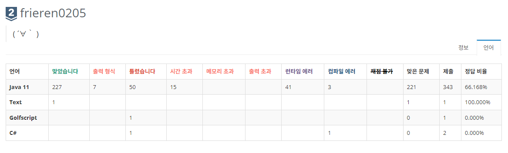
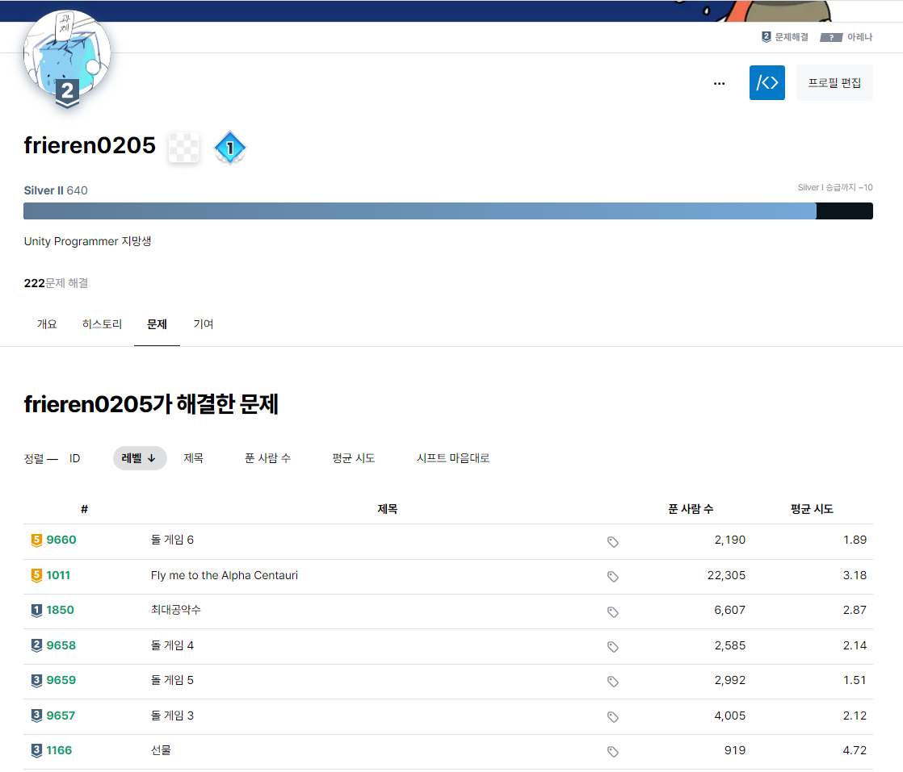

Unity Engine
Unity Engine 5의 시절쯤에는 존재만 알고 있었지만, 시간이 흘러 현재는 자칭유니티 프로그래머로써참가한 프로젝트의 팀원으로써 제대로 1명분의 역할을 해내고 있다고 생각합니다.
주로 2D를 집중적으로 작업해본 경험이 많고, 애니메이터 & 애니메이션을 조금 꼼수처럼 사용하는 일이 많았습니다.
현재도 주력은 2D로 생각하고 있고, 3D의 경우에는 아직 경험과 지식 어느쪽도 부족하다고 생각하고 있습니다..  
HTML과 JAVA
HTML의 경우에는, 정말 호기심으로 인터넷 강좌를 구매하여 조금 수강한 정도에서 그쳤습니다.
현재 관람중이신 페이지 및 일부 작품 페이지는, html5 up의 템플릿을 일부 수정하여 작성되었습니다.
JAVA의 경우에는 코딩 실력 자체를 늘리고 싶다는 생각으로 코딩 테스트 등을 JAVA로 푸는 식으로 독학했습니다.
코딩 테스트 정보는 이쪽에서 확인해주세요.
언어 능력
예전부터 서브컬쳐에 관심이 굉장히 많았기 때문에, 자연스럽게 일본어를 제2외국어로 공부하였습니다.
현재는 일본 현지인들과의 대화도 무리 없이 할 수 있고, 오히려 일본인이라고 오해 받는 경우도 있었습니다.
다만, 독학으로 배운 일본어라서 현재는 전문서적을 통해 독학중입니다.
영어 또한 어느정도 가능하나, 자신있게 회화를 할 수 있지는 않습니다.